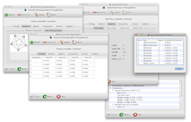
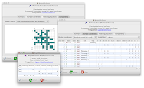
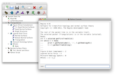

| MacOS Version | Installer | |
|---|---|---|
| Mountain Lion (10.8) Lion (10.7) Snow Leopard (10.6) on modern 64-bit machines |
 |
Download |
| Snow Leopard (10.6) on older 32-bit machines Leopard (10.5) |
Download | |
29 July 2012: MacOS 10.8 (Mountain Lion) has arrived, and Regina works out of the box. However, since none of us are Apple registered developers, Mountain Lion might quarantine Regina and refuse to start it. To fix this, control-click on Regina and select Open, and you will be given an option to tell your machine that this application is safe.
30 May 2012: Version 4.93 is out! This is the version that will be presented at CG Week 2012. It adds one-click unknot recognition, veering structures, exports to Matveev's recogniser, Python improvements, and more. You can read more about what's new, or go ahead and download the new version.
12 April 2012: Version 4.92 is out: MacOS X users now have a simple drag-and-drop install, and there is now a version for Windows! Of course, GNU/Linux users are still well-supported as always. This version introduces fundamental normal surfaces, boundary slopes for spun-normal surfaces, and more; see the highlights here.
Other highlights of Regina include angle structures, census enumeration, combinatorial recognition of triangulations, and high-level tasks such as 3-sphere recognition and connected sum decomposition. Regina comes with a full graphical user interface, and also offers Python bindings and a low-level C++ programming interface.
See the users' handbook for a full list of features.
|  | Studying 3-manifold triangulations |
|  | Normal surfaces and angle structures |
|  | In-built Python scripting |
Mountain Lion (10.8) users may be unable to start Regina because it is “from an unidentified developer” (none of us are registered with Apple). Control-click on Regina and select Open, and you will be given an option to tell your machine that this application is safe.
MacOS Version Installer Mountain Lion (10.8)
Lion (10.7)
Snow Leopard (10.6) on modern 64-bit machinesDownload Snow Leopard (10.6) on older 32-bit machines
Leopard (10.5)Download
Most Snow Leopard users should be able to run the 64-bit Lion package. If your machine is very old, you might get an error message ‘You can't open the application "Regina" because it is not supported on this architecture’. In this case, you can run the 32-bit Leopard package instead.
Windows Version Installer Windows 7
Windows Vista
Windows XP (see below)Download
On some Windows XP machines, Regina will not start (“The application failed to initialize properly ...”). The problem seems to be an obscure missing DLL, and the error message is spectacularly unhelpful; one known solution is to install Python 2.x from python.org.
To keep the installation simple, most packages do not include the MPI (high-performance computing) utilities. If you need these, let Ben know and he can build you an MPI-enabled package.
Distribution Version 32-bit package (i386 or i586) 64-bit package (amd64 or x86_64) Debian 6.0 (squeeze) Install Install unstable (sid) Install Install Fedora 17 Download Download 16 Download Download 15 Download Download 14 Download Download Mandriva 2011.0 Download Download 2010.2 Download Download 2010.1 Download Download openSUSE 12.1 Download Download 11.4 Download Download 11.3 Download Download Ubuntu 12.04 LTS (precise) Install Install 11.10 (oneiric) Install Install 11.04 (natty) Install Install 10.10 (maverick) Install Install 10.04 LTS (lucid) Install Install
If your system is not in this table, you will need to build Regina from source. You can download the source code here. Please see the separate page on building Regina for instructions on how to build Regina and what libraries and tools you will need to have installed.
If you run into any problems when you run Regina, you can check the troubleshooting page to see if your problem is discussed there. You also most welcome to contact us for help.
You can read the handbook from within Regina by selecting Help → Regina Handbook from the menu. You can also read it here online.
You can read the API documentation by selecting Help → Python API Reference from the menu. You can also read it here online.
There are other mailing lists for user support and development; click here for details.
Many others have been of assistance with this project, be it through time, knowledge, testing or code. Please see the full list of acknowledgements in the users' handbook.
Benjamin A. Burton, Ryan Budney, William Pettersson, et al.,
Regina: Software for 3-manifold topology and normal surface theory,
http://regina.sourceforge.net/, 1999–2012.
This program is free software; you can redistribute it and/or modify it under the terms of the GNU General Public License as published by the Free Software Foundation; either version 2 of the License, or (at your option) any later version.
This program is distributed in the hope that it will be useful, but WITHOUT ANY WARRANTY; without even the implied warranty of MERCHANTABILITY or FITNESS FOR A PARTICULAR PURPOSE. See the GNU General Public License for more details.
You should have received a copy of the GNU General Public License along with this program; if not, write to the Free Software Foundation, Inc., 51 Franklin St, Fifth Floor, Boston, MA 02110-1301, USA.
For complete license details, including the full GNU General Public License and information on external software that Regina uses, see the full license in the users' handbook.
We are grateful to SourceForge.net for hosting this project on their servers.
If you have written your own extensions that you think could be worth putting in the main release, please do write and let us know.
Even if you have no comments to make, it's always nice to hear from people using Regina, even if it's just to say hi. We're always interested to hear how this software is being used.
You can contact us by email: the best address is regina-user@lists.sourceforge.net, which will reach all of the developers. Of course you are also welcome to send us personal emails: our websites are linked to our names in the author list above.


{kind=link}
{kind=link}
{kind=link}